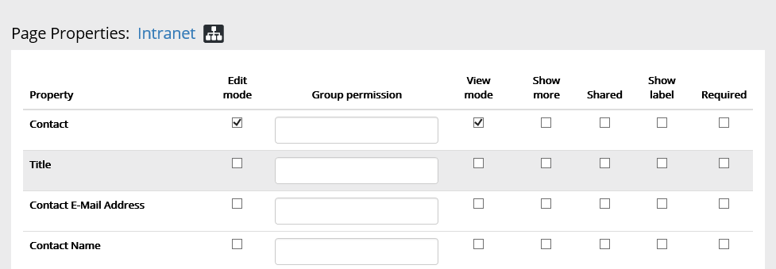
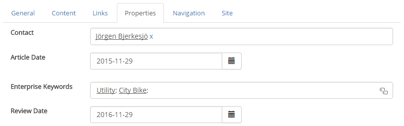
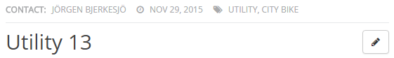

The Page Properties page will display all list columns in the Pages library of the current site. It supports the following SharePoint data types:
The built-in fields Created, Created By, Modified and Modified By is also supported.
You can check the box "Inherit Parent Settings" if you want to use the same settings as the parent site.

You can use drag and drop to change the sort order.
The settings in the example above will generate the following in edit form, for example:

...and the following on the page.
